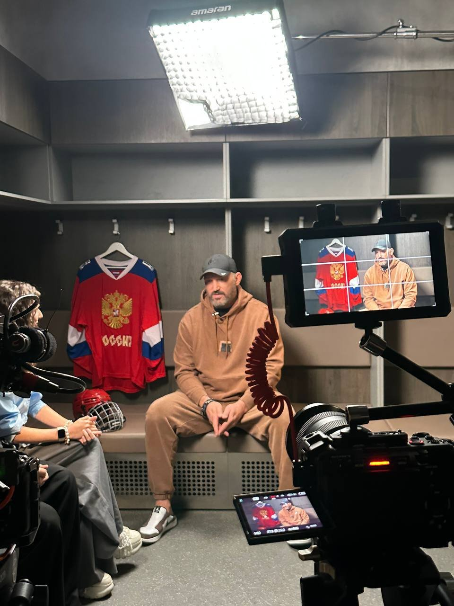
Со съёмки ↗Александр Овечкин
Хоккеист · интервью в раздевалке
EVENTSОператор и клипмейкер.
Концерты, клипы и события.
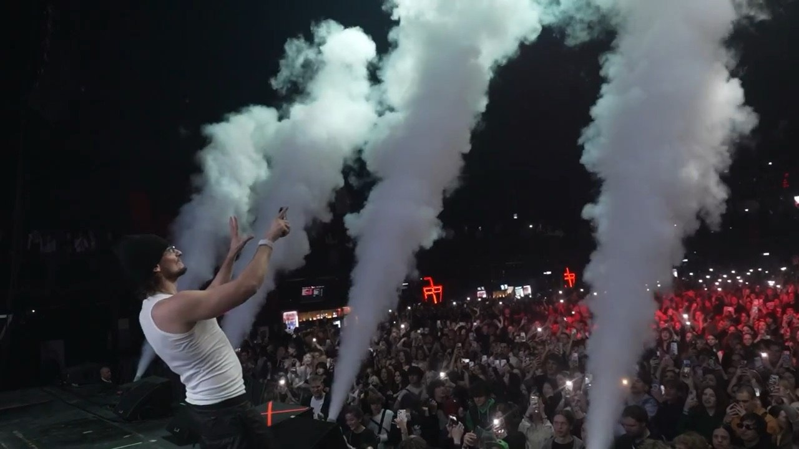
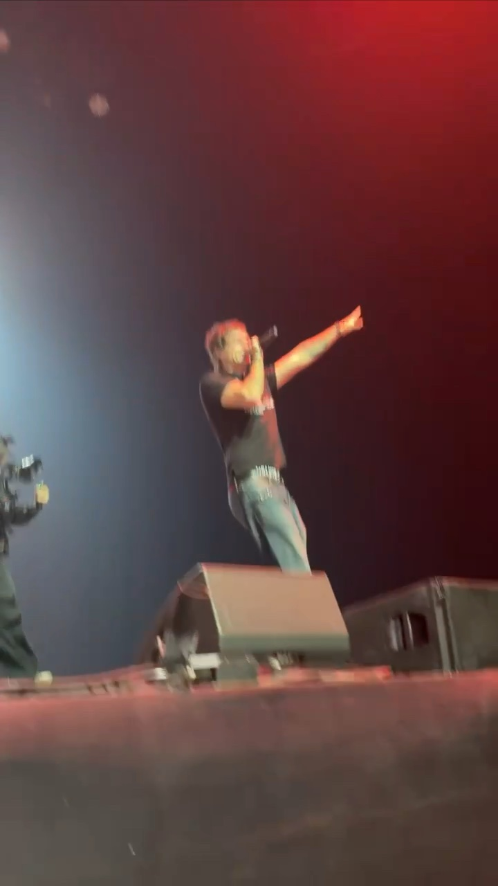
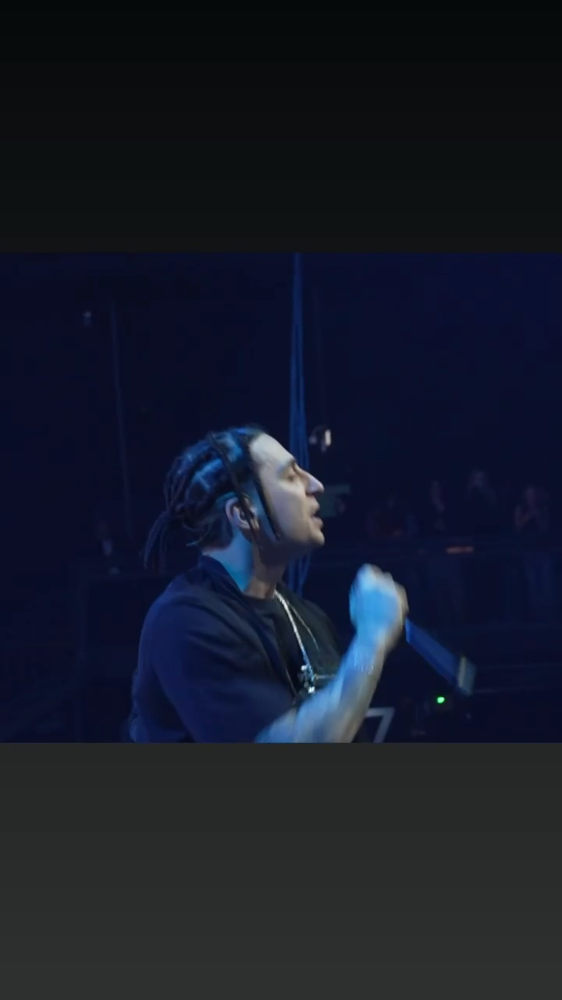
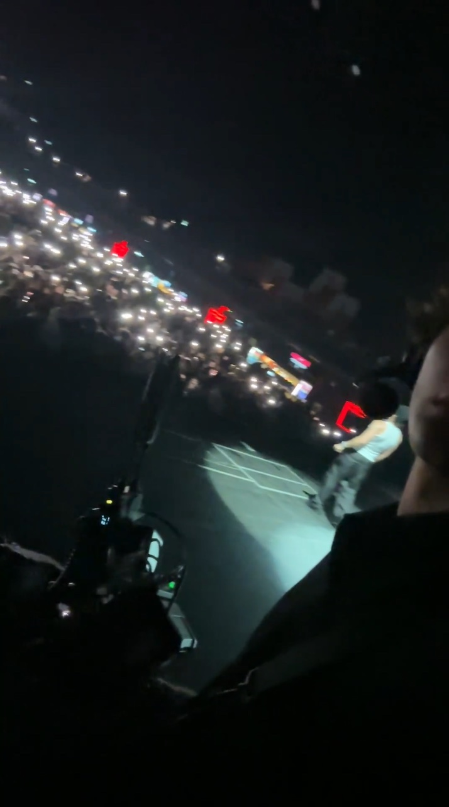
 ПОРТФОЛИО / 2026
ПОРТФОЛИО / 2026
ЧЕЛОВЕК ЗА КАМЕРОЙ
Я оператор и клипмейкер, финалист «Арт-Мастерс 2026» в компетенции «Клипмейкер».
Участвую в съёмках национального проекта «Разговоры о важном», снимаю музыкальные клипы и концерты. Среди моих площадок — концерты Yanix и Bushido Zho, а также мероприятие SLAY.
Я собрал команду операторов и монтажёров. Вместе мы берём проекты разного масштаба: от камерного мероприятия до клипа, рекламы или имиджевого фильма.
Обсудить проект с Павлом ↗Артисты и публичные личности, с которыми мы работали.

Со съёмки ↗Хоккеист · интервью в раздевалке

Хип-хоп и концертные съёмки
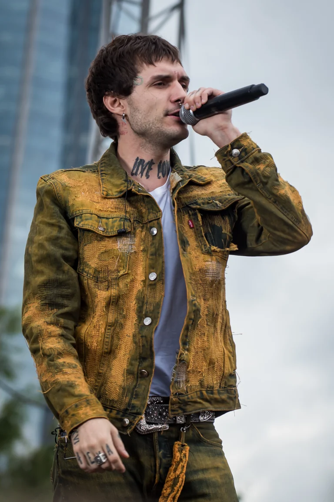
Российский рэп
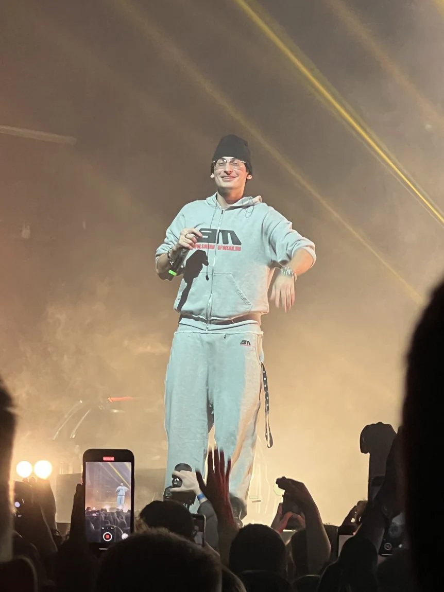
Рэп и концертная съёмка
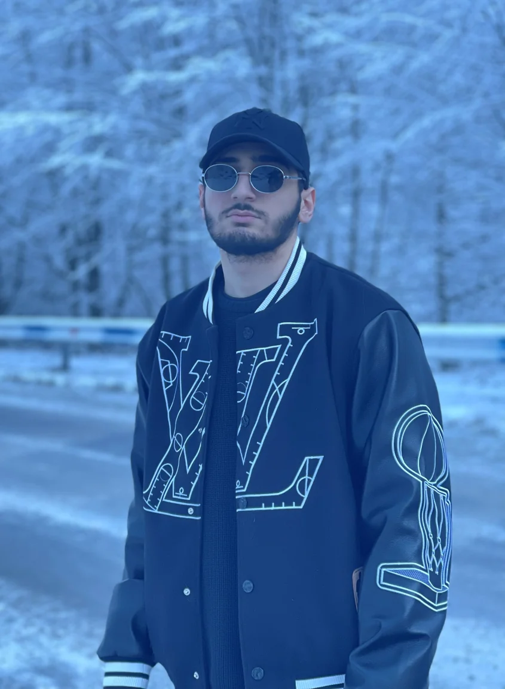
Хип-хоп и вокал
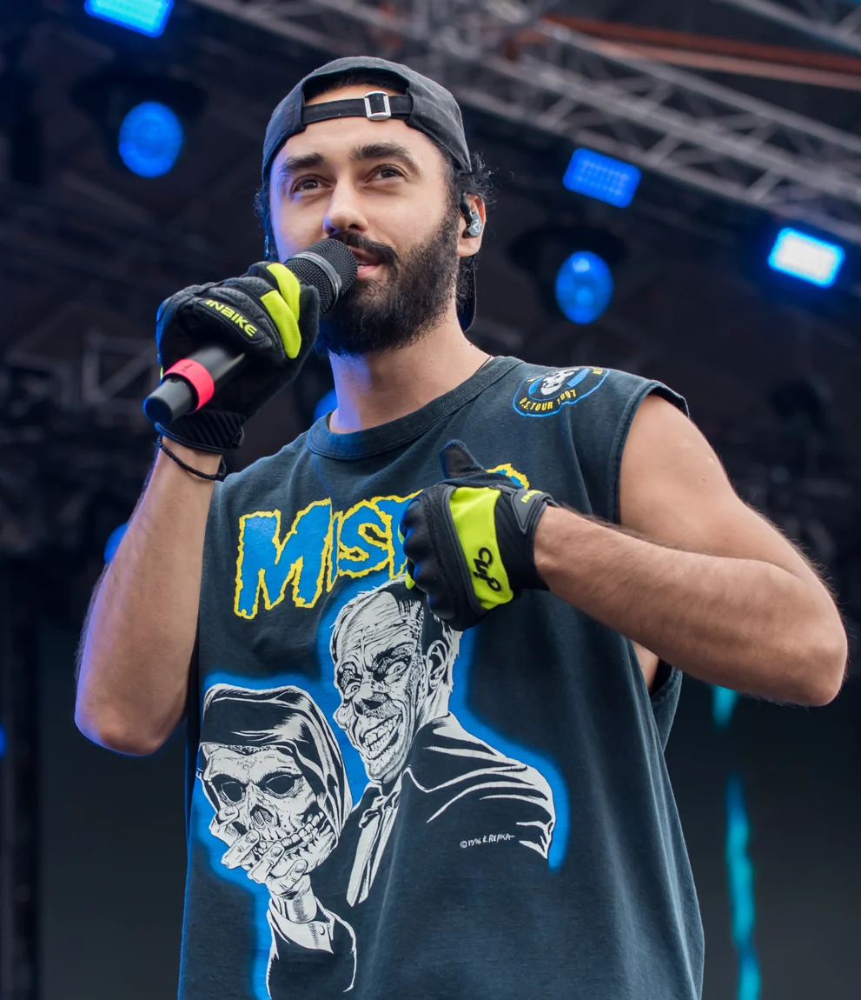
Хип-хоп и поп-музыка
Снимаем ваш день, пока он происходит. Сохраняем взгляды, жесты и тихие моменты, которые легко пропустить.
Обсудить съёмку свадьбы
Подключимся на том этапе,
на котором мы вам нужны.
Организуем съёмочный день и передадим исходники. Дальше материал может монтировать ваша команда.
Обсудить съёмку ↗ФОРМАТ / 02Уже всё сняли? Отберём дубли, соберём историю, настроим цвет и звук. Вы получите готовый ролик.
Обсудить монтаж ↗ФОРМАТ / 03Берём на себя весь цикл: от идеи и плана съёмки до финального фильма и версий для соцсетей.
Обсудить проект ↗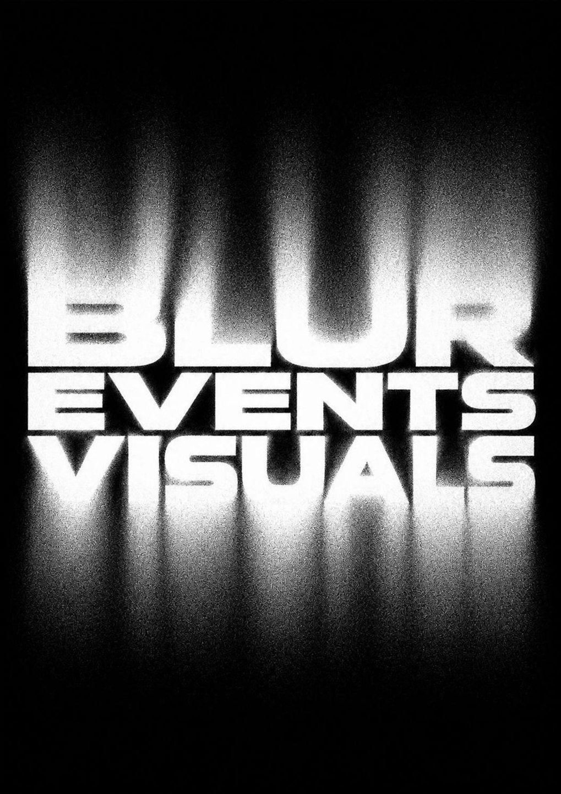
Здесь появятся приветы и напутствия наших героев.